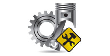
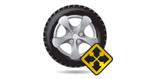

Stop & Go
Auto servis Stop & Go je firma sa tradicijom dugom više od 20 godina. Osnovana davne 1990.godine kao SZAR Bora Auto, naša firma se bavila kako automehaničarskim uslugama tako i centriranjem i reglažom trapa. Stop & Go već dugi niz godina uspešno sarađuje sa brojnim zadovoljnim klijentima. Kako tehnologija napreduje i širi se spektar inovacija, potrudili smo se da naš tim ide u korak sa vremenom.
AUTOMEHANIKA
Automehaničarska radionica
Automehaničarska radionica u okviru servisa Stop & Go opremljena je najsavremenijim dijagnostičkim aparatima.
VULKANIZER
Vulkanizerska radionica
Vulkanizerska radnja opremljena je najsavremenijim mašinama koje omogućavaju brzu montažu, balansiranje i vulkaniziranje točkova.
AUTODIJAGNOSTIKA
Kompjutersko uočavanje kvara
Elektronski sistem informaciju o kvaru pamti kao grešku koja će biti identifikovana čim se uređaj za autodijagnostiku poveže sa vozilom.